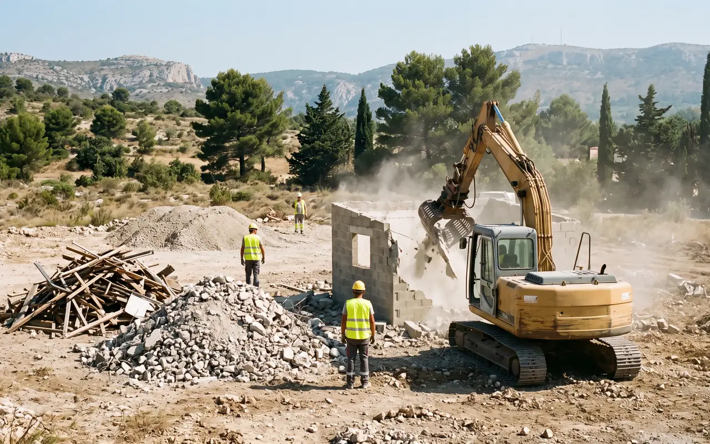
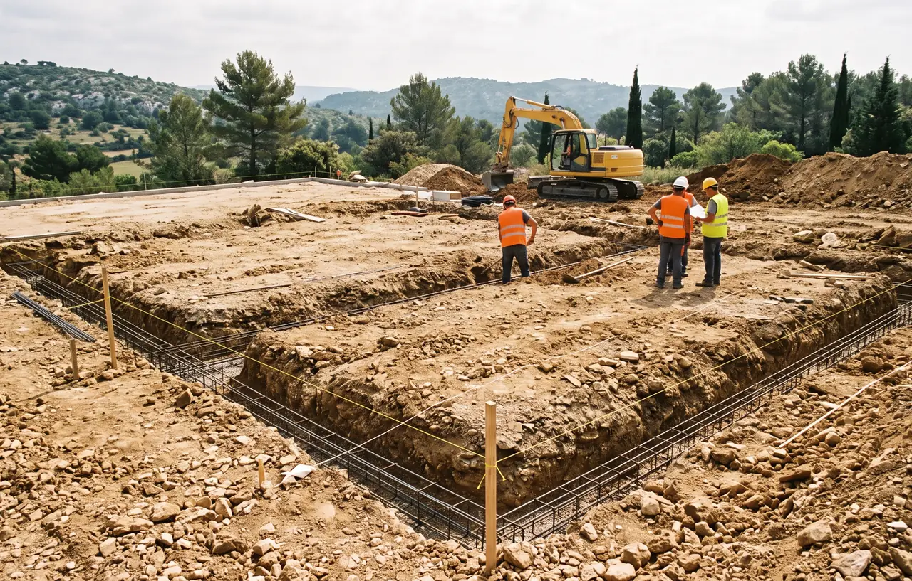

Expertise en Démolition et Déconstruction à Marseille (13)
Marseille, deuxième ville de France, présente des défis uniques en matière de démolition. Entre les immeubles anciens du Vieux-Port, les constructions haussmanniennes des quartiers centraux et les grands ensembles des arrondissements périphériques, chaque projet de déconstruction nécessite une expertise pointue. STP Terrassement intervient sur l'ensemble des 16 arrondissements de Marseille avec une méthodologie adaptée au contexte urbain dense. Nos équipes réalisent le diagnostic avant démolition complet, incluant le repérage amiante et plomb, indispensable pour les bâtiments construits avant 1997. Nous assurons le tri sélectif des déchets sur chantier, le recyclage matériaux et la traçabilité via les bordereaux de suivi des déchets (BSD). Pour tout projet de démolition, nous coordonnons également le terrassement du terrain après intervention.

Démolition d'Immeubles à Marseille
Spécialiste de la démolition sélective d'immeubles en milieu urbain dense à Marseille. Nos équipes maîtrisent les contraintes spécifiques de la cité phocéenne : rues étroites du centre historique, mitoyenneté complexe, réseaux souterrains anciens. Broyage béton par cisaille de démolition et brise-roche hydraulique adaptés aux environnements sensibles.
- Démolition sélective en centre-ville
- Gestion de la mitoyenneté complexe
- Arrêté de voirie et signalisation
- Évacuation gravats en benne grutée
- Sécurisation périmètre riverains
Prix : 80-200€/m² selon type et accessibilité

Déconstruction Sélective & Recyclage
À Marseille, la déconstruction sélective prend tout son sens face aux grands projets de rénovation urbaine. Démontage soigné des éléments en vue d'un recyclage matériaux maximum. Transport vers centre de tri agréé avec émission systématique des bordereaux de suivi des déchets (BSD).
- Tri sélectif des déchets sur chantier
- Récupération pierre de taille marseillaise
- Recyclage responsable 85%+
- Valorisation déchets inertes
- BSD et traçabilité complète
Taux valorisation : 85-90% des matériaux

Démolition Dalles & Béton Armé
Interventions de broyage béton sur les chantiers marseillais, des dalles industrielles portuaires aux fondations de constructions anciennes. Utilisation de brise-roche hydraulique (BRH) et cisaille de démolition pour la casse de béton armé jusqu'à 50 cm d'épaisseur.
- Brise-roche hydraulique puissant
- Cisaille de démolition pour béton armé
- Démolition dalles industrielles
- Extraction fondations profondes
- Découpe précise au disque diamant
Curage d'Immeubles Marseillais
Le curage est une opération essentielle dans les projets de réhabilitation à Marseille. Retrait méthodique des éléments non structurels : cloisons, revêtements, isolants, menuiseries, sanitaires. Préparation optimale avant démolition sélective ou rénovation lourde.
- Curage complet d'appartements
- Dépose revêtements sols et murs
- Retrait faux-plafonds et isolants
- Désamiantage si nécessaire
- Nettoyage complet post-curage
Évacuation & Tri des Gravats
À Marseille, la gestion des gravats requiert une logistique adaptée au tissu urbain. Nous organisons le tri sélectif des déchets directement sur chantier et l'acheminement vers les centres de tri agréés des Bouches-du-Rhône.
- Tri sélectif multi-filières
- Bennes adaptées 8-30m³
- Transport vers ISDI/ISDND agréés
- Centre de tri agréé Bouches-du-Rhône
- Bordereaux de suivi des déchets (BSD)
Sécurité, Désamiantage & Normes
Marseille possède un parc immobilier ancien où la présence d'amiante est fréquente. Nous assurons un diagnostic avant démolition rigoureux, le désamiantage certifié et l'établissement du plan de retrait conforme à la réglementation.
- Diagnostic avant démolition obligatoire
- Plan de retrait et PPSPS
- Désamiantage certifié SS4
- DICT, arrêté de voirie, permis de démolir
- Assurance RC décennale
Types de Démolition à Marseille
Chaque quartier de Marseille présente des caractéristiques architecturales différentes. Nos équipes adaptent la méthode de démolition au contexte local : immeubles haussmanniens du centre, bastides provençales, bâtiments industriels du port ou grands ensembles des quartiers nord.
Démolition Urbaine en Centre-Ville
Les projets de démolition en centre-ville de Marseille exigent une approche minutieuse. Le tissu urbain dense du Vieux-Port, de la Canebière ou du Panier impose une démolition sélective contrôlée étage par étage. Nos équipes sécurisent les bâtiments mitoyens, gèrent les DICT pour localiser les réseaux souterrains complexes de la ville et obtiennent les arrêtés de voirie nécessaires à l'occupation du domaine public. Le curage préalable permet de retirer tous les matériaux dangereux, dont l'amiante très présente dans les constructions marseillaises d'après-guerre.
Démolition Industrielle et Portuaire
Marseille, premier port de France, génère des besoins spécifiques en démolition industrielle. Entrepôts portuaires, hangars, anciennes usines du bassin de Séon ou de la vallée de l'Huveaune : nous intervenons sur des structures métalliques, des dalles béton de forte épaisseur et des bâtiments contenant potentiellement des polluants industriels. Le diagnostic avant démolition inclut alors une recherche étendue de substances dangereuses. Le broyage béton par cisaille de démolition permet un traitement efficace des structures massives, avec recyclage matériaux systématique via nos partenaires de centre de tri agréé.
Processus de Démolition à Marseille
Étude & Diagnostics
Visite technique gratuite, repérage amiante/plomb, analyse structure, identification réseaux souterrains marseillais.
Démarches Admin
Permis de démolir auprès de la mairie de secteur, DICT, arrêté de voirie, coordination ABF si zone protégée.
Préparation Site
Déconnexion réseaux, désamiantage si nécessaire, sécurisation périmètre, installation clôtures.
Démolition
Démolition sélective ou mécanique, tri sélectif des déchets continu, gestion poussières et nuisances.
Questions Fréquentes sur la Démolition à Marseille
Quel est le coût d'une démolition d'immeuble à Marseille ?
Le coût d'une démolition d'immeuble à Marseille varie entre 80€ et 200€ par m² selon la taille du bâtiment, le type de construction (béton armé, pierre de taille), l'accessibilité en centre-ville et la présence éventuelle d'amiante. Pour un immeuble R+2 de 300 m², comptez entre 30 000€ et 80 000€ tout compris avec évacuation gravats et tri sélectif. Demandez votre devis gratuit personnalisé.
Comment obtenir un permis de démolir à Marseille ?
Le permis de démolir à Marseille se demande auprès de la mairie de secteur concernée (Marseille est divisée en 8 secteurs). Le délai d'instruction est de 2 mois. Il est obligatoire pour toute démolition en zone protégée (périmètre ABF, secteur sauvegardé du Panier, abords monuments historiques). STP Terrassement vous accompagne dans toutes les démarches, y compris la DICT et l'arrêté de voirie.
Le diagnostic amiante est-il obligatoire avant démolition à Marseille ?
Oui, le diagnostic amiante avant travaux (DAAT) est obligatoire pour tout bâtiment dont le permis de construire date d'avant le 1er juillet 1997. À Marseille, une grande partie du parc immobilier est concernée. Si de l'amiante est détecté, un désamiantage certifié SS4 doit être réalisé avant toute démolition, avec un plan de retrait validé par l'inspection du travail. Coût diagnostic : 300-600€.
Peut-on démolir en centre-ville de Marseille malgré les contraintes d'accès ?
Oui, STP Terrassement est spécialisé dans les démolitions en milieu urbain dense à Marseille. Nous utilisons des mini-pelles et des techniques de démolition sélective adaptées aux rues étroites du Panier ou de l'Estaque. Nous gérons l'arrêté de voirie, la DICT, la sécurisation du périmètre pour les riverains et la coordination avec les services municipaux de Marseille.
Où sont évacués les gravats de démolition à Marseille ?
Les gravats issus de nos chantiers de démolition à Marseille sont triés sur site puis transportés vers des centres de tri agréés des Bouches-du-Rhône. Le béton est concassé pour devenir des granulats recyclés, les métaux partent en ferraillage, le bois en filière énergie. Nous remettons systématiquement les bordereaux de suivi des déchets (BSD) garantissant une traçabilité complète et le respect de la réglementation environnementale.
Pourquoi Choisir STP Terrassement pour Votre Démolition à Marseille ?
Spécialiste de la démolition à Marseille et dans les Bouches-du-Rhône (13), nous maîtrisons les contraintes spécifiques de la cité phocéenne : urbanisme dense, réseaux souterrains complexes, bâtiments anciens contenant de l'amiante. Garantie décennale, devis gratuit sous 24h, tri sélectif des déchets et recyclage matériaux vers des centres de tri agréés. Du diagnostic avant démolition au curage, en passant par le désamiantage et l'évacuation gravats avec bordereaux de suivi des déchets (BSD), nous gérons tout. Après démolition, nous réalisons le terrassement et préparons votre terrain. Consultez nos zones d'intervention.
Services Complémentaires
Terrassement
Après la démolition, préparez votre terrain avec nos services de terrassement.
Découvrir